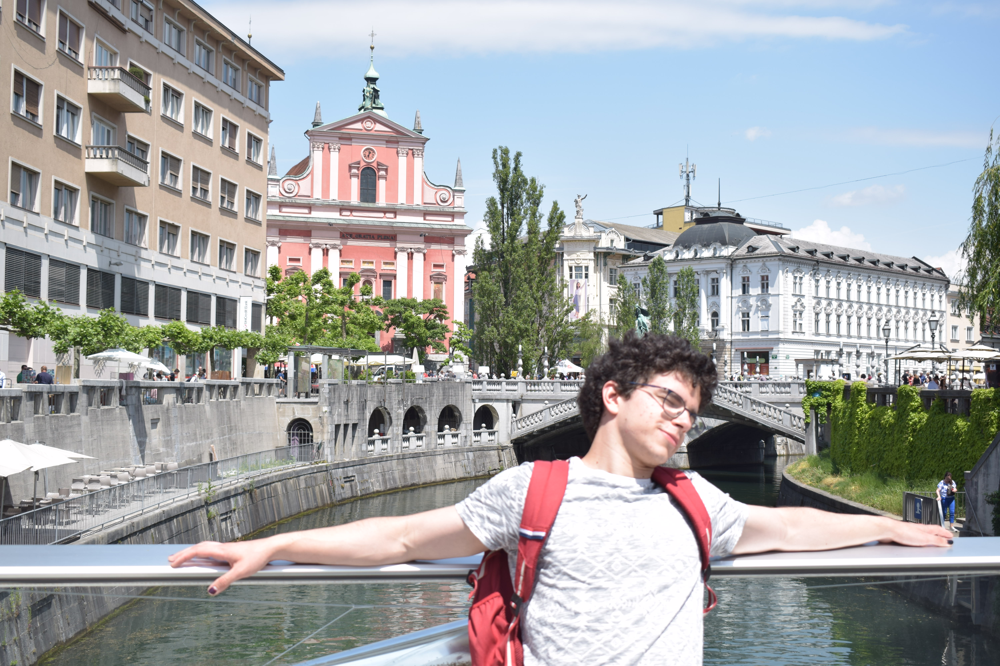

My Resume

I grew up in Rijeka, Croatia where I finished Nikola Tesla elementary school and gratuated from Prva sušačka hrvatska gimnazija. After graduating, I got into the Faculty of Science in Zagreb and started
studying mathematics. I'm in love with my wife Manda!
Education
- elementary school Nikola Tesla, 2019
- Prva sušačka hrvatska gimnazija( mathematical gymnasium ), 2021
- currently attenting the third year of mathematics on the Faculty of Science in Zagreb
Work experience
- guitar street performer
- 1 year of online math tutoring within the E-matematika company
Skills
- 10 years of experience in guitar playing
- programming languages I'm familiar with:
- C & C++
- Python
- HTML, CSS & JavaScript
- in depth knowledge of Linear Algebra and Mathematical analysis
Find me on: